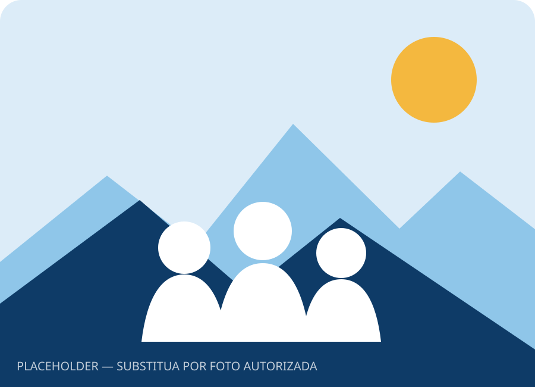
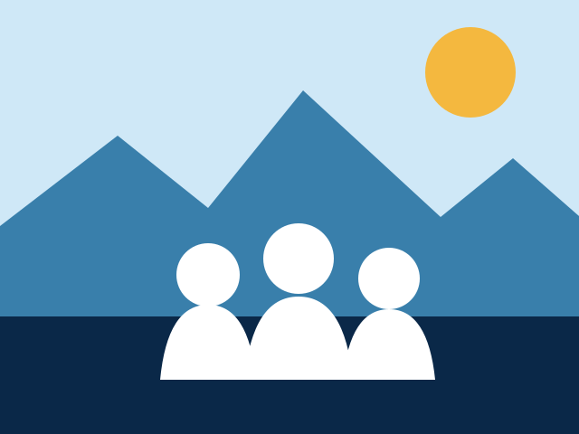
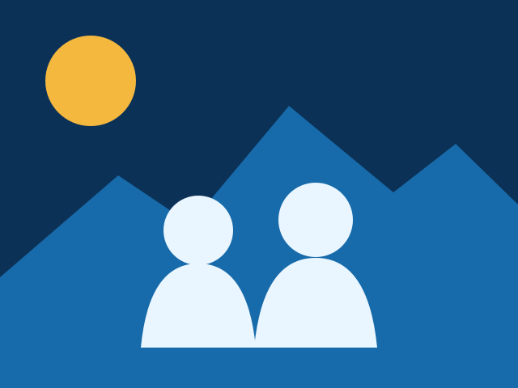
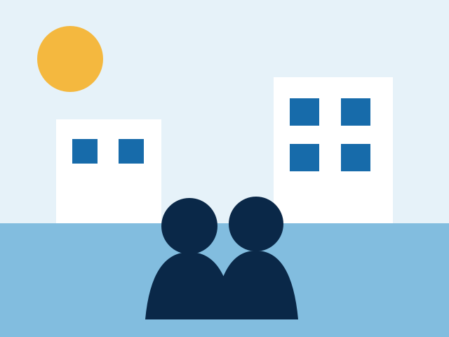

01
Saúde perto de você
Fortalecer o cuidado próximo e tornar o atendimento mais humano e acessível.
Quero conversar →Um novo olhar para nossa cidade
Uma proposta construída com diálogo, proximidade e compromisso com uma cidade mais humana para todas as pessoas.
Nome, imagem e conteúdo fictícios para demonstração visual.


Perto das pessoasUma história de proximidade
João é um personagem fictício criado para mostrar como uma trajetória de compromisso com a comunidade pode ganhar vida em uma presença digital clara e acolhedora.
Este espaço deve ser personalizado com uma história verdadeira: raízes, valores e motivações, sempre com informações verificadas e autorizadas pelo cliente.
“A boa política começa quando a gente escuta de verdade.”— Mensagem demonstrativa
Ideias que cuidam do presente
Diretrizes ilustrativas que demonstram como organizar prioridades de maneira simples e acessível.
01
Fortalecer o cuidado próximo e tornar o atendimento mais humano e acessível.
Quero conversar →02
Valorizar a comunidade escolar e criar caminhos para aprender e crescer.
Quero conversar →03
Aproximar oportunidades, capacitação e quem deseja empreender na cidade.
Quero conversar →04
Cuidar dos espaços públicos com prevenção, presença e ações integradas.
Quero conversar →05
Planejar deslocamentos mais seguros, fluidos e acessíveis para todos.
Quero conversar →06
Estimular convivência, bem-estar e ocupação positiva dos bairros.
Quero conversar →Nossa cidade, nosso futuro
Nosso jeito de fazer
Diálogo aberto para compreender as necessidades reais de cada região.
Informação clara e prestação de contas acessível para toda a população.
Uma atuação próxima, conectada ao cotidiano e às diferentes comunidades.
Planejamento responsável para transformar boas ideias em cuidado concreto.
Campanha nas ruas
Galeria preparada para receber registros reais e autorizados de visitas, conversas e ações.



Vamos conversar?
Acompanhe os canais demonstrativos ou fale com a equipe pelo WhatsApp.